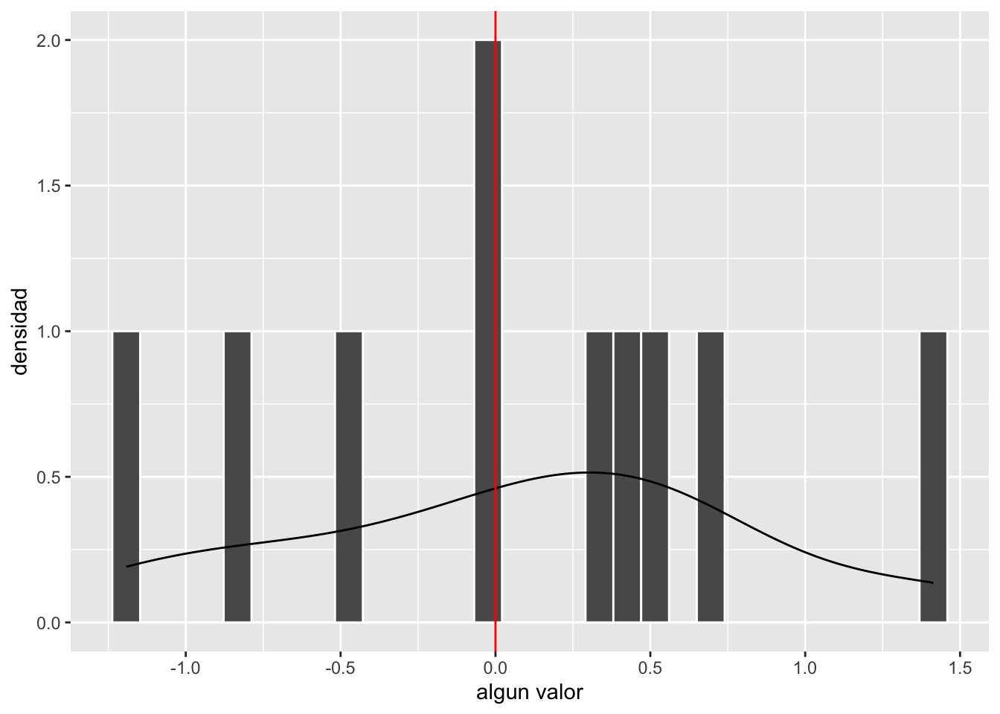
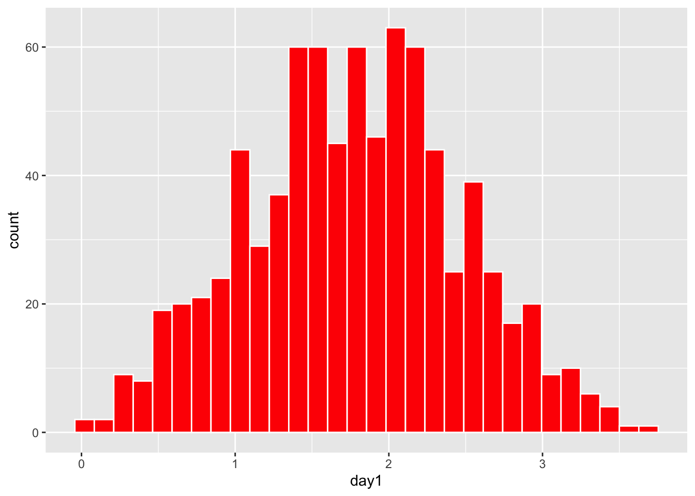
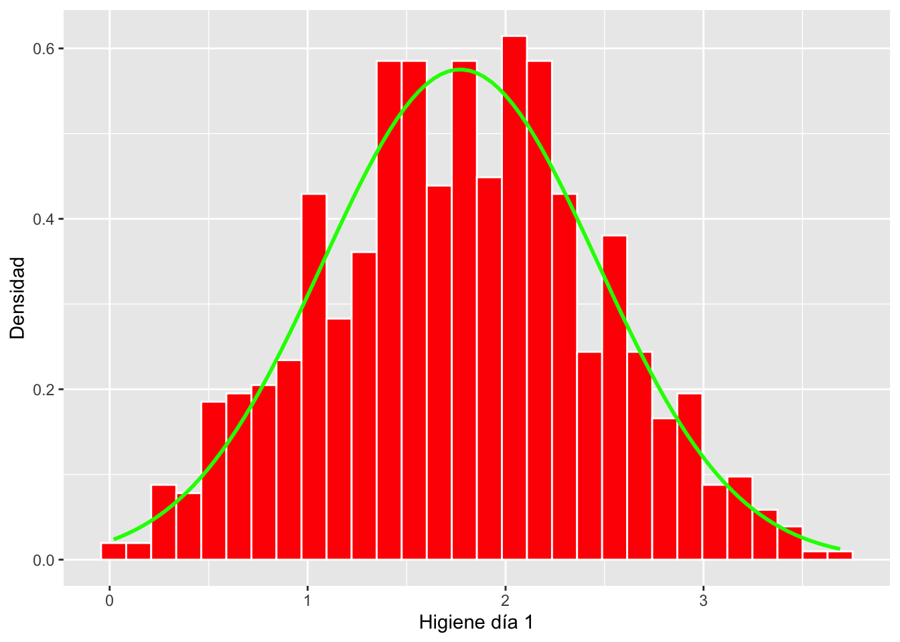
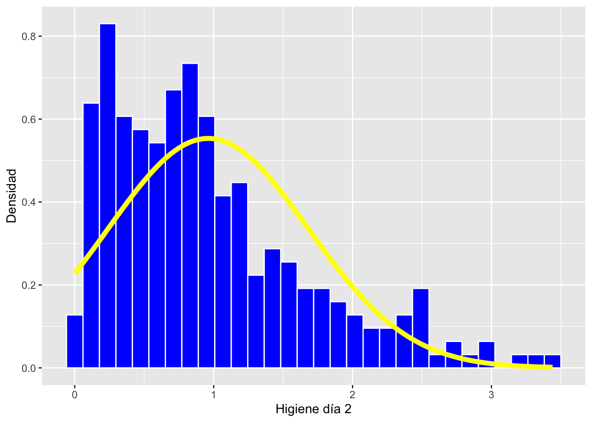
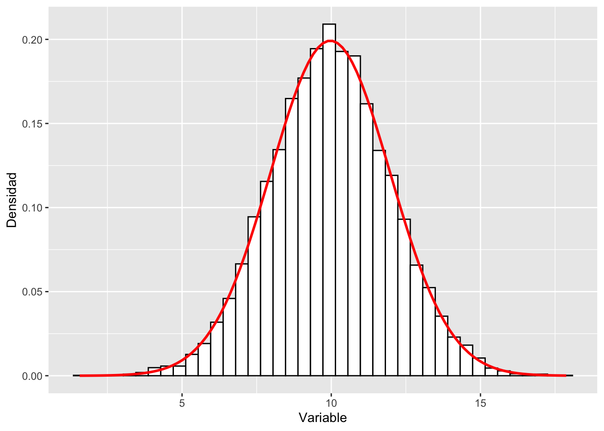
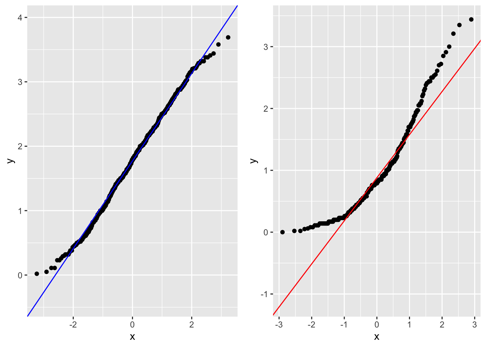

Capítulo 12 Distribución Normal
Fecha de la última revisión
## [1] "2026-08-01"12.1 Instalar y activar los siguientes paquetes
if (!require("pacman")) install.packages("pacman")
pacman::p_load( car, GGally, ggversa, pastecs, psych, pander, ggplot2, nortest, Hmisc, boot, knitr,tidyverse, gt, gridExtra)Activar los Paquetes
library(nortest) # paquete para probar la normalidad
library(car) # paquete para análisis de correlación
library(ggplot2) # paquete para visualizar los datos
library(ggversa) # paquete para diferentes conjuntos de datos
library(GGally) # Un paquete basado un ggplot2 para visualizar correlaciones
library(pastecs) # paquete para análisis tiempo-espacial usado en ecología
library(psych) # paquete para análisis psicométrica, psicológica y de personalidad
library(Hmisc) # Un grupo de función prácticos para gráficos y tablas
library(boot) # paquete para calcular los intervalos usando "bootstrap"
library(knitr) # un grupo de función para incluyendo tablas bonitas con kable.
library(tidyverse)
library(gt)
library(gridExtra)12.2 La distribución normal
Este módulo está enfocado en entender diferentes aspectos de la distribución normal. Muchas pruebas, como la prueba de t, las correlaciones, las regresiones y el ANOVA, dependen de que algunos de los conjuntos de datos cumplan con una distribución normal. Este tipo de pruebas se conocen como pruebas paramétricas.
La distribución normal tiene una ecuación que describe su distribución. Lo que se observa es que la ecuación depende solamente de dos valores desconocidos: el promedio universal, \(\mu\), y la desviación universal, \(\sigma\). Nota que aquí estamos considerando todos los datos sobre una variable. Por ejemplo, si estamos hablando del tamaño de una especie de pájaro (el quetzal), tendríamos que tener TODOS los datos de cada uno de ellos. Primero veremos cómo se ve esta distribución y después explicamos por qué, aunque no tenemos todos los datos, una aproximación es suficiente.
\[P(x)=\frac{1}{{\sigma\sqrt{ 2\pi}}}{e}^{-\frac{(x-\mu)^{2}}{{2\sigma}^{2}}}\]
En la ecuación de la distribución normal, \(x\) es el valor de la variable, \(\mu\) es la media poblacional, \(\sigma\) es la desviación estándar poblacional, \(\pi \approx 3.1416\) y \(e \approx 2.7183\). Toda la forma de la curva queda determinada únicamente por \(\mu\) (dónde se centra) y \(\sigma\) (qué tan ancha es).
El promedio de la población \(\mu=\frac{\sum{{x}_{i}}}{{n}_{i}}\), se usa la letra “mu”, y se refiere al promedio universal. Esto quiere decir que no falta ningún dato. Nota que la distribución tiene forma de campana, donde 50% de los datos están por encima del promedio y 50% están por debajo del promedio. Debido a que la distribución tiene unos parámetros específicos, se puede predecir información cuando los datos cumplen con tal distribución.
Distribución normal. Es una distribución de probabilidad continua, simétrica y con forma de campana, descrita por completo por dos parámetros: la media (\(\mu\)) y la desviación estándar (\(\sigma\)). El área total bajo la curva es igual a 1, y aproximadamente el 68%, el 95% y el 99.7% de los datos caen a \(\pm 1\), \(\pm 2\) y \(\pm 3\) desviaciones estándar de la media (la regla empírica).
#set.seed(123458)
dfnorm=rnorm(10, 0,1)
dfnorm=data.frame(dfnorm)
ggplot(dfnorm,(aes(x=dfnorm)))+
geom_histogram(colour="white")+
geom_density()+
geom_vline(xintercept = 0, colour="red")+
#annotate("text", x=2.8, y = 100000.1, label="50% de los \n valores")+
#annotate("text", x=-2.8, y = 100000.1, label="50% de los \n valores")+
xlab("algun valor")+
ylab("densidad")
12.3 Evaluando visualmente la distribución
El primer paso de cada investigación es evaluar si los supuestos se cumplen. Si las pruebas necesitan tener una distribución normal uno de los métodos más sencillo construir un histograma de los datos.
Usaremos datos que hemos visto en el modulo T5.
Se necesita el archivo DownloadFestival que se encuentra debajo la pestaña de Los Datos. El ejemplo proviene de Field et al. (2014).
Una bióloga estaba preocupada por los posibles efectos sobre la salud de los que participan en un festival de música. Entonces, un año fue al Download Festival en el Reino Unido (Download Festival UK). Ella midió la higiene de los que participaron en el concierto (n = 810) durante el festival de 3 días. Cada día intentaba encontrar a todas las personas que censó el primer día. Los valores asignados fueron de 0 a 4 sobre el nivel de limpieza, según cómo olían los participantes
- 0 = hueles como un cadáver.
- 4 = hueles a rosas dulces en un fresco día de primavera
library(readr)
DownloadFestival_No_Outlier_ <- read_csv("Data_files_csv/DownloadFestival_No_Outlier.csv")
dlf=DownloadFestival_No_Outlier_ #usamos un nombre más corta para facilitar
head(dlf) # ver las 3 primeras filas## # A tibble: 6 × 5
## ticknumb gender day1 day2 day3
## <dbl> <chr> <dbl> <dbl> <dbl>
## 1 2111 Male 2.64 1.35 1.61
## 2 2229 Female 0.97 1.41 0.29
## 3 2338 Male 0.84 NA NA
## 4 2384 Female 3.03 NA NA
## 5 2401 Female 0.88 0.08 NA
## 6 2405 Male 0.85 NA NASe nota en el histograma que la mayoría de los datos de la higiene de los participantes en el primer día se parece bastante a una distribución normal. Nota que los valores en el eje de y es la frecuencia de los valores en el conjunto de datos.
ggplot(dlf, aes(day1))+
geom_histogram(color="white", fill="red")
***12.4 Añadiendo la distribución teórica al histograma
Ahora vamos a añadir la siguiente formula al gráfico \(P(x)=\frac{1}{{\sigma\sqrt{ 2\pi}}}{e}^{-\frac{(x-\mu)^{2}}{{2\sigma}^{2}}}\). De esta forma podemos comparar los datos reales (las barras rojas) con la distribución teórica, suponiendo que el promedio y la desviación estándar son iguales a los de los datos.
Se añade el promedio y la desviación estándar con las siguientes funciones. La función stat_function() es para calcular parámetros.
stat_function(fun = dnorm, # dnorm = la densidad de la distribución normal
args = list(
mean = mean(dlf$day2, na.rm = TRUE), # mean = el promedio de los datos
sd = sd(dlf$day2, na.rm = TRUE))) # sd = la desviación estandar de los datosAhora nota que el eje de y ya no son frecuencias, sino densidades. El área total bajo la curva es igual a 1.0. Vea que la línea teórica se acerca bastante a las barras del histograma. Este proceso NO es una prueba para determinar si los datos cumplen con una distribución normal. Aunque, con experiencia visualizando los datos, uno puede tener una buena apreciación de si los datos cumplen suficientemente con la distribución normal para usar las pruebas paramétricas.
hist.dlfc1 <- ggplot(dlf, aes(day1)) +
geom_histogram(aes(y=after_stat(density)), colour="white", fill="red") +
labs(x="Higiene día 1", y = "Densidad")+
stat_function(fun = dnorm,
args = list(mean = mean(dlf$day1, na.rm = TRUE),
sd = sd(dlf$day1, na.rm = TRUE)),
colour = "green", size = 1)
hist.dlfc1
12.5 Evaluando datos no normal
Usamos los datos del segundo día y comparamos con el primer día. En este caso vemos que los datos no siguen una distribución normal están sesgados a la izquierda y vemos que “falta” valores pequeños, en otra palabra en este caso los valores negativos.
Evalúa y compara con el día tres
hist.dlfc2 <- ggplot(dlf, aes(day2)) +
geom_histogram(aes(y=after_stat(density)), colour="white", fill="blue") +
labs(x="Higiene día 2", y = "Densidad")+
stat_function(fun = dnorm,
args = list(mean = mean(dlf$day2, na.rm = TRUE),
sd = sd(dlf$day2, na.rm = TRUE)),
colour = "yellow", size = 2)
hist.dlfc2
12.6 Datos teóricos con histograma y la función de normalidad
Aquí creo una conjunto de datos al azar con la función rnorm y se presenta un histograma y se añade la linea teórica de la distribución normal.
La función rnorm crea una lista de datos con un promedio y una dispersión específicos.
rnorm(n, mean, sd)
rnorm = (la cantidad de datos generados, promedio, la desviación estándar)Es necesario convertir la lista en un data.frame o en un tibble para usar los datos en ggplot2. Como los datos provienen de una distribución normal, la línea teórica sigue (casi) perfectamente las barras de frecuencia. Mientras más datos uno tiene, más similar es la distribución observada (las barras) a la distribución teórica (la línea).
Haz unos ejercicios reduciendo y aumentando el tamaño de muestra, n, y compara las distribuciones. Evalúa qué pasa cuando son muy pequeñas (n de 30 o menos).
#rnorm(10, 100, 10)
x=rnorm(10000, 10, 2)
dfx=as_tibble(x)
gt(head(dfx, n=3)) # Los primeros 3 datos del tibble | value |
|---|
| 9.657369 |
| 14.189985 |
| 8.162815 |
library(ggplot2)
hist.x <- ggplot(dfx, aes(value)) +
theme(legend.position = "none") +
geom_histogram(aes(y=after_stat(density)), bins=40,colour="black", fill="white") +
labs(x="Variable", y = "Densidad")+
stat_function(fun = dnorm, args = list(mean = mean(dfx$value,
na.rm = TRUE),
sd = sd(dfx$value, na.rm = TRUE)),
colour = "red", size = 1)
hist.x
12.7 qqplot
El gráfico Q-Q, o gráfico cuantil-cuantil, es una herramienta gráfica que nos ayuda a evaluar si un conjunto de datos proviene de alguna distribución teórica. Por ejemplo, si ejecutamos un análisis estadístico que asume que nuestra variable dependiente está normalmente distribuida, podemos usar un gráfico Q-Q normal para verificar esa suposición; también se pueden evaluar otras distribuciones. Nota que es solo una verificación visual, no una prueba estadística. Esto nos permite visualizar si los datos cumplen o no con la distribución teórica.
Un diagrama Q-Q es un diagrama de dispersión y compara dos conjuntos de cuantiles uno observado y el otro teórico. Si ambos conjuntos de cuantiles provienen de una distribución normal, deberíamos ver los puntos formando una línea que es más o menos recta. Usamos los datos del primer y del segundo día de la higiene de los participantes al concierto de rock. Vean que los puntos en el primer gráfico siguen una línea recta y la línea teórica (color azul) sigue estos puntos. Esto sugiere que los datos siguen una distribución normal. En el segundo gráfico vemos que los datos observados no siguen los datos teóricos (color rojo).
d=ggplot(dlf, aes(sample=day1))+
geom_qq()+
geom_qq_line(colour="blue")
e=ggplot(dlf, aes(sample=day2))+
geom_qq()+
geom_qq_line(colour="red")
grid.arrange(d,e, ncol=2)
Cómo leer un gráfico Q-Q. Si los puntos observados caen aproximadamente sobre la línea recta de referencia, los datos son compatibles con la distribución normal. Desviaciones sistemáticas indican falta de normalidad: una curvatura en forma de “S” sugiere colas más pesadas o más ligeras de lo normal, mientras que puntos que se despegan en un extremo sugieren sesgo (asimetría) en esa dirección.
12.8 Pruebas de normalidad.
Los ejemplos arriba no son pruebas, son visualización de los datos y con experiencia uno puede reconocer los con juntos de datos que cumple o no con una distribución normal. Al principio, cuando uno comienza a estudiar la estadística esto puede ser un poco confuso. Hay pruebas que uno puede utilizar para evaluar y decidir si rechazar o no rechazar la hipótesis de que los datos provienen de una distribución normal. Estas pruebas hay que interpretarlas con cuidado porque son muy sensibles al tamaño de muestra. Con muestras grandes tienden a sobre-rechazar la hipótesis nula (Ho: los datos provienen de una distribución normal): rechazan Ho —un error de Tipo I— incluso cuando los datos son suficientemente normales para las pruebas paramétricas que se van a usar. Con muestras muy pequeñas ocurre lo contrario: les falta poder y cometen errores de Tipo II (no rechazan Ho aunque los datos no sean normales). Vamos a ver dos de estas pruebas, aunque hay muchas en la literatura.
Por ejemplo Wikipedia menciona por lo menos 8 diferentes pruebas de normalidad https://en.wikipedia.org/wiki/Normality_test.
Las pruebas de normalidad son muy sensibles al tamaño de muestra. Con muestras grandes rechazan la hipótesis nula ante desviaciones triviales de la normalidad (que no afectan a las pruebas paramétricas), y con muestras muy pequeñas casi nunca la rechazan por falta de poder. Por eso no conviene depender solo del valor-p de estas pruebas: combínalo siempre con la inspección visual (histograma y gráfico Q-Q).
12.9 La prueba de Shapiro-Wilks
La prueba de Shapiro-Wilk es un prueba para determinar si un muestreo proviene de una distribución normal. Los datos se ponen en orden de los valores y se calcula el estadística de W. Aquí no vamos enseñar como hacer los cálculos los que le interesa pueden ir al a la siguiente pagina de https://en.wikipedia.org/wiki/Shapiro–Wilk_test. Lo importante es que
Ho: los datos provienen de una distribución normal.
Ha: los datos NO provienen de una distribución normal.
Por consiguiente, si se rechaza la hipótesis nula, uno concluye que los datos no cumplen con una distribución normal.
Problemas con la prueba: la prueba es sensible al tamaño de muestra. Esto quiere decir que cuando el tamaño de muestra es demasiado pequeño o demasiado grande, tiende a dar errores de Tipo II y de Tipo I, respectivamente.
Reglas básica.
1. no utilizar la prueba si el tamaño de muestra es menor de 50
2. no utilizar la prueba si el tamaño de muestra es muy grande (mayor de 200)
a. Nota que algunos programas han hecho modificaciones a la fórmula y ahora se puede utilizar con tamaños de muestra de hasta 2000 (Stata, SPSS, SAS).
La función shapiro.test() es para evaluar una variable a la vez. Nota que aquí los datos de higiene del primer día sugieren que no cumplen con una distribución normal, aun cuando en las dos alternativas anteriores (histograma y qqplot) los datos se ven bastante normales.
shapiro.test(dlf$day1)##
## Shapiro-Wilk normality test
##
## data: dlf$day1
## W = 0.99592, p-value = 0.03198
length(dlf$day1)## [1] 81012.10 La prueba de normalidad de Anderson-Darling
La prueba de Anderson-Darling es una prueba omnibus (una prueba general) EDF para la hipótesis que los datos provienen de una distribución normal. Las pruebas ómnibus son una especie de prueba estadística. Prueban si la varianza explicada en un conjunto de datos es significativamente mayor que la varianza inexplicada, en general. Para más detalle sobre esta prueba vea https://en.wikipedia.org/wiki/Anderson–Darling_test.
Se necesita la librería nortest y la función ad.test
Miren ahora que la prueba de Anderson-Darling sugiere que los datos cumplen con la normalidad, mientras que la de Shapiro-Wilk rechaza la hipótesis nula.
El mensaje es que es posible que diferentes pruebas le den información distinta y hay que estar claro sobre los supuestos y la sensitividad de estas pruebas.
La prueba de Anderson Darling es una de las más poderosas para evaluar si los datos provienen de una distribución normal. D’Agostino (1986) sugiere que la prueba puede ser utilizada con tamaño de muestra tan bajo como n=8.
*Ralph B. D'Agostino (1986). "Tests for the Normal Distribution". In D'Agostino, R.B.; Stephens, M.A. (eds.). Goodness-of-Fit Techniques. New York: Marcel Dekker. ISBN 0-8247-7487-6.* ##
## Anderson-Darling normality test
##
## data: dlf$day1
## A = 0.53944, p-value = 0.1661